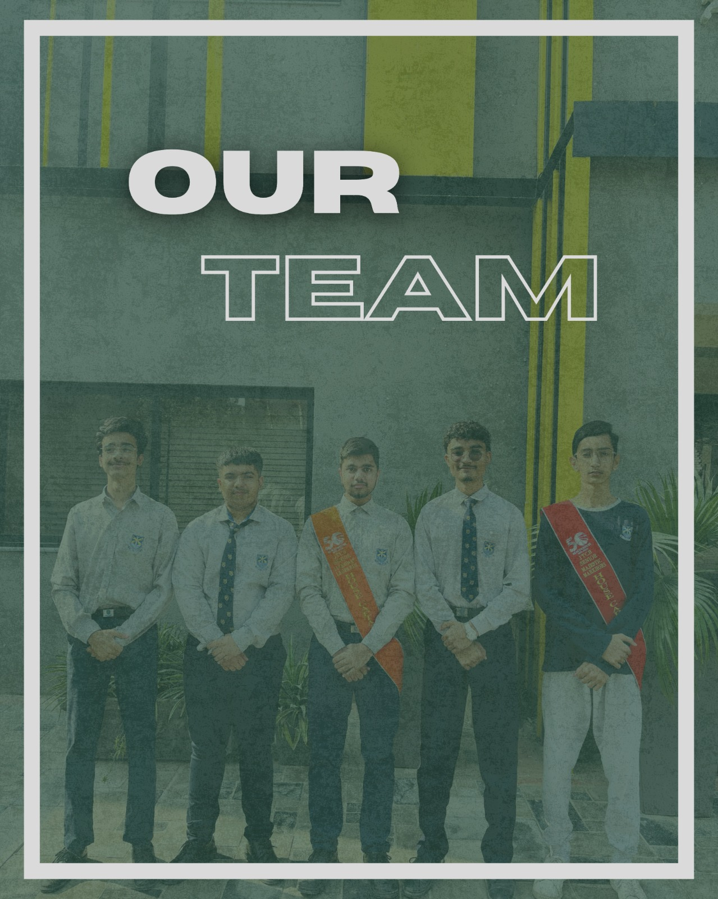

The Faces of Innovation
Hassan Usman
Head ExecutiveThe Team Lead of Project Zyora! An extrovert with a passion for football and a proud Hafiz, known around campus simply as Hafiz Sahab, Hassan is the driving force behind our social media pages, making sure our message about food safety reaches everyone with style and impact. Known as the aesthetic and visionary mind of the team, he blends leadership with innovation to keep Zyora’s presence vibrant, inspiring and engaging.
Hashim Fowad
Lead InterviewerThe powerhouse of Project Zyora! Known as the bulked guy of the team, he brings confidence and charm wherever he goes. With his strong communication skills sharpened through years of debating, Hashim took the lead in conducting major interviews for our project, ensuring every voice and perspective was heard.
Ghulam Mustafa
Research DirectorKnown as Gulli a valued member of Project Zyora! Known for his kind and soft-spoken nature, he played a key role in creating the questionnaires which assisted us in our interviews. With his thoughtful approach and calm personality, Gulli keeps the team grounded and focused.
Abdur Rehman Chaudhary
Graphic DesignerThe quiet force of Project Zyora! An introvert with a passion for cricket,he brings precision and innovation to the team. Chaudhary expertly writes project documents and handles graphic designing to ensure that our research and visuals are clear, engaging and professional.
Umar Mansha
Media DirectorThe sharp mind behind the lens at Project Zyora! Also known as the CPU of the school recognized for his high IQ and signature glasses, Umar handles the filming of interviews and captures key moments throughout our journey. His precision and attention to detail ensure every shot tells the story of our mission.